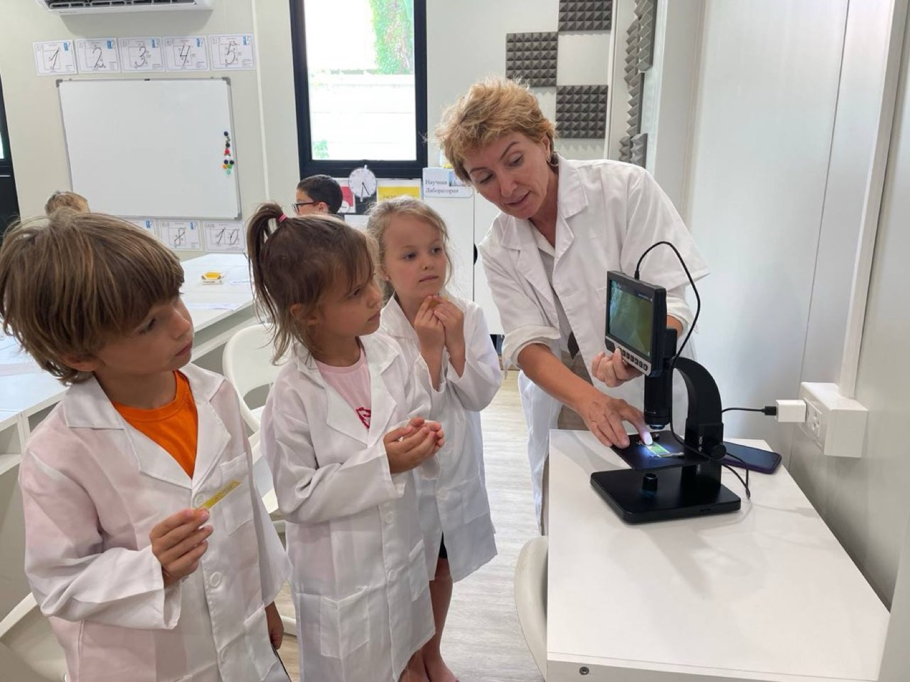
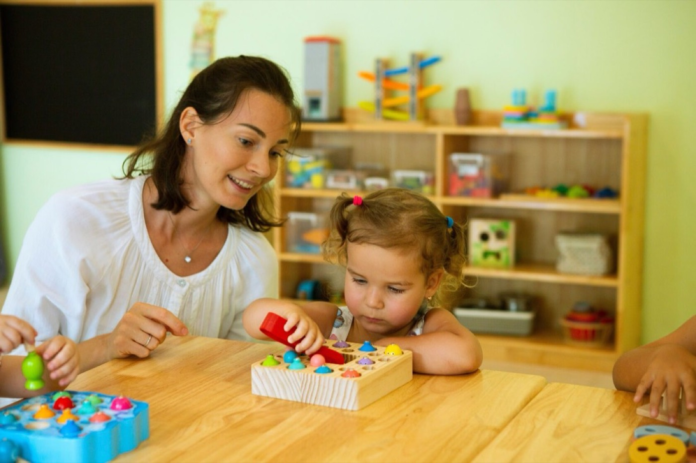
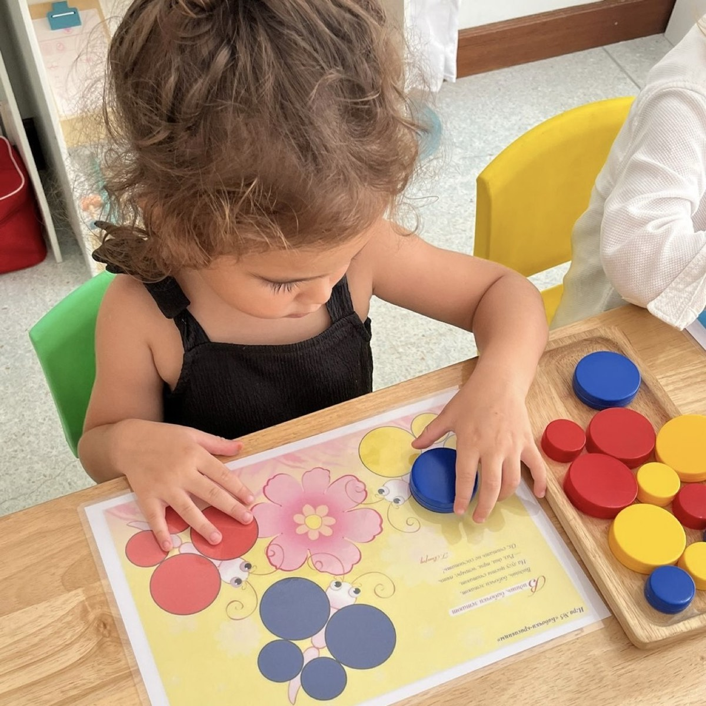

Kinderville Nova — школа и сад на Пхукете для детей 2–11 лет. Кампус в Раваи — сад и Year 1, кампус в Чалонге — классы Year 2–6.
Британская программа по лицензии Министерства образования Таиланда, ведём её по Cambridge Primary. Её работа — дать язык, на котором дальше учатся: язык целиком, науку и математическую терминологию Cambridge, академическое чтение и письмо.
Математика по Петерсон, грамота и русский язык, чтение и литература, окружающий мир: язык мышления и грамотность — с ними дверь в российскую программу остаётся открытой.
Ребёнок может прийти без английского. В Year 3–6 язык делится на группы по уровню владения, и новичок начинает в своей — там, где понимает урок. В саду и Year 1–2 новичка ведёт педагог внутри класса, а догнать помогает бустер — дополнительные занятия для тех, кто пришёл без языка.
У каждого предмета в расписании своя работа: что он даёт ребёнку сейчас и какую дверь держит открытой.
Логическое и абстрактное мышление, математическая база. Ребёнок сам выводит правило, а не заучивает готовое.
Язык мышления и грамотность. С ним открыта дверь в российскую программу.
Курс русской программы целиком. Отдельные усилия кладём на то, чтобы ребёнок читал с удовольствием и понимал прочитанное.
Глубина понимания: суть явления ребёнок осваивает на родном языке.
Язык целиком: чтение и письмо, грамматика, словарный запас.
Как договариваться в группе, распределять работу, доводить начатое до результата.
Страна, в которой ребёнок живёт.
Понятие, разобранное утром на русском, получает международную терминологию и форматы Cambridge Primary. Это подготовка к Cambridge Primary Checkpoint — кембриджским итоговым работам за начальную школу — и возможность продолжить учёбу в англоязычной средней школе.
Другая программа и другая работа: больше экспериментов и наблюдений, и весь язык науки — английский. Так у ребёнка складывается язык, на котором учатся, а не только разговаривают.
Та же программа, больше устной практики.
Классы не делятся по программам: всё учебное утро дети Light и полного дня учатся вместе. Вторая половина дня — программа полного дня, что в неё входит.
У сада, Year 1 и Year 2 набор предметов и объём другие — как устроены эти годы, ниже, в «Ступенях».
Про среду начистоту. Английской среды вокруг школы у наших семей нет: дом и двор русские, и английский здесь ребёнок берёт из уроков и второй половины дня. Поэтому язык стоит в основной сетке, делится по уровню и продолжается в предметах — результат зависит от объёма, а дом работает как буфер.
В два-три года никто не сажает за буквы. Ребёнок играет, учится говорить, привыкает к режиму и к другим детям — это и есть работа возраста. Речь развиваем на двух языках: в саду работает педагог-носитель. Ассистенты групп — тайские педагоги с дипломом учителя; с детьми они говорят по-английски. В группе малышей всегда двое взрослых. Первые недели идёт адаптация, рядом психолог. Саду больше десяти лет.


Жизнь та же: много игры и общения. В Reception начинаем знакомить с буквами и звуками обоих языков — как в Англии, где весь год идёт фоника, обучение чтению через связь звука и буквы. Русское чтение — по методике Мельниковой: сначала ребёнок слышит звук, потом узнаёт его букву на бумаге. К концу года дети читают короткие слова. Математика для малышей — «Игралочка» Петерсон, окружающий мир на двух языках.
Первый из двух подготовительных лет. Ребёнок уже школьник: у него программа Cambridge Year 1 и русская программа старшей группы сада. Занимается он на территории сада — там просторнее и больше места для игры. Отдых среди дня есть, домашних заданий нет. Английским дети занимаются вместе своим классом: педагог адаптирует новичка внутри общей группы, и мы рекомендуем ему бустер — дополнительные занятия, чтобы быстрее догнать группу. Математика — два урока Петерсон на русском и английский слой Cambridge поверх.
Второй подготовительный год. Ребёнок переходит на кампус школы: он среди школьников, со статусом ученика, и это его подтягивает. Уклад школьный, с отдыхом в середине дня; домашних заданий почти нет: может быть только английский. Занятия при этом полноценные: русская дошкольная грамота, английский Cambridge Year 2, математика по Петерсон с английским слоем Cambridge: её меньше, чем в Year 3, и больше игры.
Что вырастает за этот год. Произвольное внимание — умение сосредоточиться, когда надо, а не когда интересно. Способность выдержать урок целиком, работа по инструкции взрослого, ответственность за свои вещи и за задание. И школа становится своим местом.
Ради этого год и нужен: порог первого класса у нас высокий — и это осознанно, поэтому мы предпочитаем разгон прыжку.
Настоящая учебная нагрузка начинается здесь: прописи, техника чтения, больше самостоятельности. Русский язык — прописи и «письмо с окошками»: ребёнок оставляет окошко там, где не уверен в букве, и мы учим проверять, а не угадывать. Математика — Петерсон на русском плюс английский слой Cambridge. Английский с Year 3 разделён по уровню владения: новичок из России и тот, кто уже говорит, занимаются в разных группах.
Программа Cambridge за Year 4–6 и российская за 2–4 класс. Английский по уровням, цель — кембриджские детские экзамены YLE (Flyers, Key). Математика продолжается на двух языках и выходит на Cambridge Primary Checkpoint. Что ребёнок получает на выходе → Результаты и выход.
Сколько детей в группе: в саду 8–14 в зависимости от возраста, в Year 1–2 — до 16, в Year 3–6 — от 9 до 18 на занятии. Английский и математика делятся по уровням, там группы меньше.
Детей принимают с 8:00, до начала занятий — завтрак.
Занятия начинаются в 8:45: круг с куратором и пятнадцать минут чтения, каждый день.
Дальше — четыре урока ядра, пока голова свежая.
Обед и домашняя работа: дети делают её в школе, каждый день, и это зона ответственности ребёнка, а не родителей. На программе Light часть заданий по английскому уезжает домой — почему так.
Наука и математика на английском, английский язык, мастерские и спорт по выбору. Между уроками перемены, обед и полдник: в школе кормят четыре раза в день, вся еда — со своей кухни. День закрывает короткий круг с куратором: что сегодня получилось.
Занятия заканчиваются в 16:30, до 17:00 — игры и сборы домой. Работает продлёнка до 19:00.
У сада и Year 1 день мягче: больше игры и своего пространства, отдых в середине дня. В Year 2 уклад школьный, но отдых в середине дня остаётся.
Ребёнок на программе Light уходит домой в 14:00 — после уроков, обеда и домашней работы.
Ребёнок сам открывает правило. У Петерсон урок построен так, что дети приходят к правилу сами, а не получают его готовым и заучивают.
Дети работают в группе. Задачу делят, договариваются, сводят результат вместе — этому отдельно учат на Soft Skills.
Оценивают по критериям. Освоение и старание оценивают отдельно, по четырём уровням: видно, что именно ребёнок уже умеет и сколько усилий он вложил. Рейтингов детей у нас нет.
Домашняя работа делается в школе. Каждый день, в середине дня.
Что видит родитель. Куратор ведёт класс весь год и раз в неделю присылает обзор недели: чем жили, что проходили; а если у вас есть вопросы — он на связи. Три раза в год выходит обзор развития ребёнка: в октябре, декабре и июне. Оценки и обзоры родитель видит в приложении школы Mojo.
Мы сознательно берём детей, которым учиться труднее: разный темп, речевые особенности, тревожность при переезде. Что для этого есть:
А если ребёнку слишком легко. Английский разделён по уровням, и сильный ребёнок работает в своей группе. В критериях есть верхний уровень — он про сделанное сверх задачи, а не про скорость; и мы просим объяснить решение другому, потому что объяснить труднее, чем решить.
Мы не обещаем, что ребёнок заговорит к такому-то месяцу или догонит класс к такому-то сроку. Обещаем работу школы — и то, что вы будете её видеть.
Школа растёт, и часть уклада появляется впервые — с 1 сентября 2026 года.
Выпуск 2025 года. Наши выпускники Year 6 сдали ВПР — всероссийские проверочные работы по российской программе — на «хорошо» и «отлично».
Cambridge Primary Checkpoint — кембриджские итоговые работы за начальную школу. К концу Year 6 мы ведём ребёнка к контрольным точкам обеих систем: российской и кембриджской. По математике маршрут у школы выстроен, по английскому мы выходим на него впервые в этом году. Граница, о которой лучше знать заранее: маршрут рассчитан на ребёнка, который пришёл к нам не позже Year 4. Если ребёнок приходит в Year 5–6 без английского, к кембриджским работам идём только по индивидуальному плану догона — разберём это на встрече, до договора.
Документы на выходе. Школьные документы на английском — Certificate of Graduation и Academic Transcript, с ними ребёнок переходит в международную среднюю школу.
Российские документы. Аттестацию за российский класс ребёнок сдаёт у нас в школе, начиная с Year 3; проводит её аккредитованная школа-партнёр в России, форма семейная, документы государственного образца. Русскую программу ребёнок проходит в том объёме, которого требует этот стандарт. Стоимость и срок решения — на странице цен.
Обе дороги. После Year 6 ребёнок может продолжить в англоязычной средней школе (Cambridge, IB) или в русскоязычной. После чисто русской началки войти в англоязычную среднюю трудно; после чисто английской вернуться в русскую — ещё труднее: теряется почти вся программа, отстаёт математика, ещё сильнее — язык. Мы стараемся не закрывать ни одну из дорог.
Средняя ступень. Открыть её — в планах школы. Сроков пока не называем.
Выбирать не нужно. Английский — основная академическая программа, британская. На русском ребёнок продолжает учиться: математика по Петерсон, грамота, чтение, литература. К концу Year 6 готовим к контрольным точкам обеих систем.
Речь и язык учёбы — разные вещи, и мы строим оба. Сначала язык целиком: чтение и письмо, грамматика, словарь. Дальше часы устной практики. И сверху предметы, которые идут на английском: там ребёнок учится на языке, а не изучает его. Сроков не называем: результат зависит от объёма, а английской среды за стенами школы у наших семей нет.
Тайского языка в программе нет. Есть предмет «Тайская культура» — час в неделю, на английском.
Почти все наши семьи русскоязычные. «Международная» — про программу, лицензию и визы: британская программа, лицензия международной школы, учебная виза. Английский здесь ребёнок берёт из уроков — дом и двор у наших семей русские. Поэтому английский стоит в основной сетке и делится по уровню, чтобы каждый понимал урок.
Лицензию международной школы мы получили в 2024 году. Но школа уже живёт: работают все ступени от сада до Year 6, есть выпуск 2025 года с результатами, — они выше на этой странице, — а в выпуске 2026-го дети, которые учились у нас не один год. Детскому саду больше десяти лет. Результата, проверенного десятилетиями, у школы нет; есть программа, куратор, оценки в приложении и то, что дети уже сделали.

Покажем классы, кухню и как проходит день — на кампусе в Чалонге или в видеозвонке. Экскурсию и разговор о ребёнке ведёт основатель школы, вот кто это.
Kinderville Nova International School · Раваи и Чалонг, Пхукет